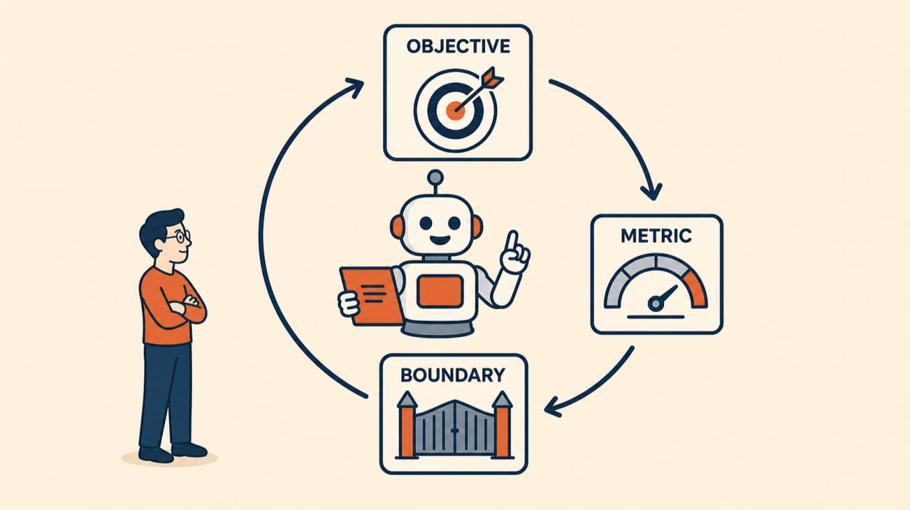

Confidential · AI Learning Product
Continuous Research for an AI Learning Product
Sole researcher on an AI learning product in development. Built a test, prioritize, fix, re-test cycle that shipped 3+ changes every round.
Read Case Study →